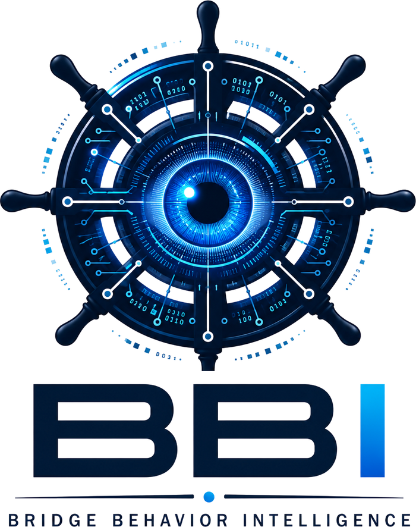
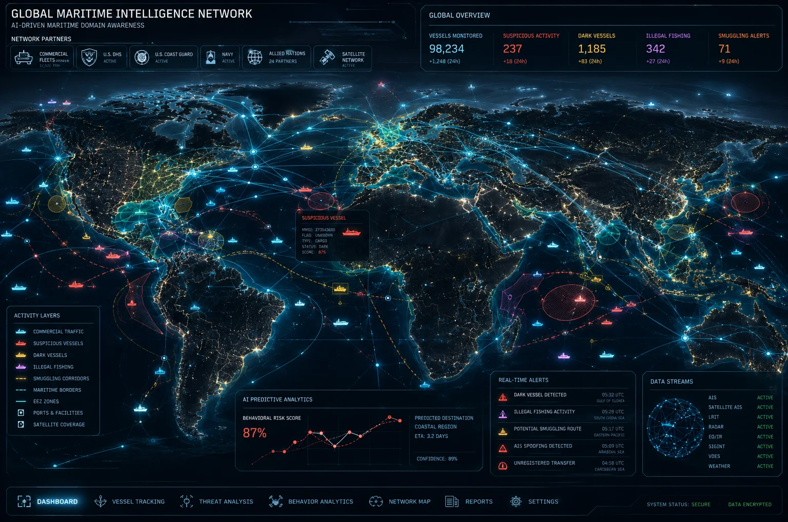
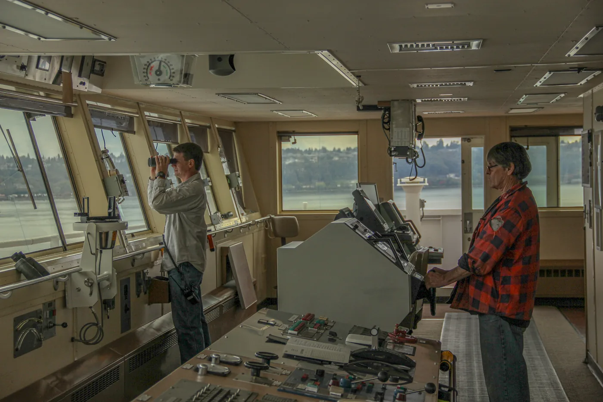
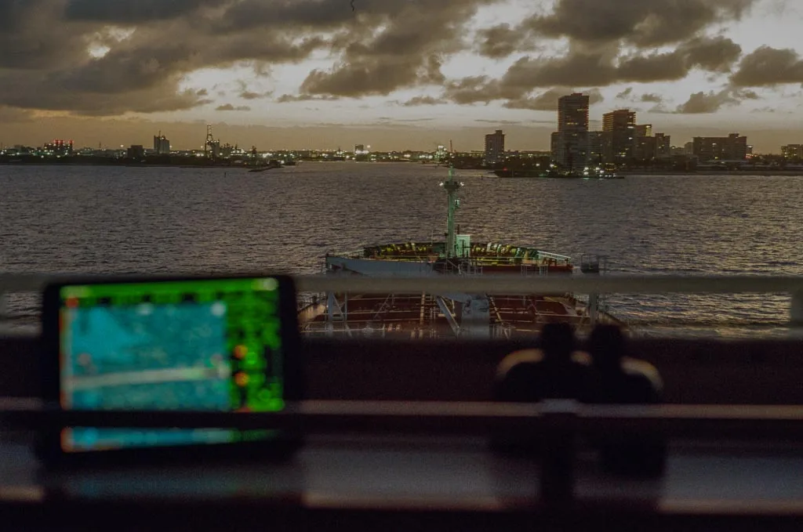

Bridge Behavior Intelligence™
U.S. patent pending

Know who is really out there.
A vessel announces who it is over AIS. Nothing on the bridge can verify it.
Bridge Behavior Intelligence™ gives watch officers, fleet operators and agencies a defensible read on every tracked contact: how it is behaving, how far its claimed identity can be trusted, and the evidence behind both.
What it does
Three things, continuously.
- Watches behavior.Every tracked vessel's maneuvering is followed and scored, so unusual behavior stands out before it becomes a problem.
- Checks identity.What a vessel claims to be is compared with what the ship can observe for itself, and the two are scored separately.
- Records the evidence.Each assessment is issued as a signed report that other vessels can confirm and that fleets, agencies and insurers can rely on.
How it differs
Built for the bridge, not only for the shore.
- Assessed where the contact is seenJudgements are made on board, in real time, rather than delivered later as a shoreside warning.
- The officer's judgement countsThe person with eyes on the target can add structured observations that carry weight in the assessment.
- Two scores, not oneBehavior and identity confidence are kept separate, so a clean track with a doubtful identity is never mistaken for a safe one.
- Resilient positioningIdentity checks rest on the ship's own sensing, with positioning that stays resilient to GNSS jamming and spoofing.
The commercial embodiment of NAVARC's distributed maritime identity validation network. Architecture, interface and technical detail are shared under NDA.

Who it is for
Anyone who has to decide what a contact is.
- Watch officersA clearer picture of the traffic around the ship, with the reasoning visible.
- Fleet operatorsA consistent, recorded view of what each ship encountered and how it was assessed.
- Agencies and insurersSigned, corroborated evidence rather than a single unverified AIS track.
See Bridge Behavior Intelligence™ in a private session.
Demonstrations are given privately. Write to arrange one, or to request a briefing under NDA.

About
A NAVARC Technologies™ product.
Bridge Behavior Intelligence™ is developed by NAVARC Technologies™ of Fort Lauderdale, Florida, a maritime technology company founded and led by a working harbor pilot. NAVARC also develops Pilot Vector, decision support for harbor pilots, and pilot-transfer safety systems.